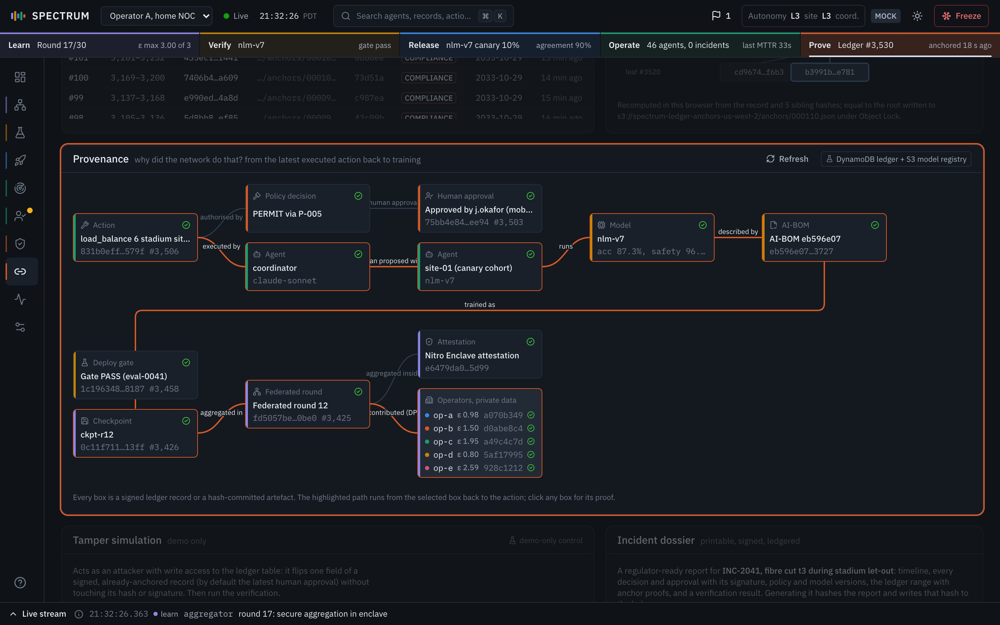

The Audit & Proof screen is where SPECTRUM proves that its own history has not been
changed. Every important thing the system does is written as a signed, hash-linked record. This screen
lets you check the whole chain, edit one record on purpose to show the check catches it, trace a network
action back to the training round behind it, and print a signed incident report.
Route /audit (dossier: /dossier/:incident)Go to it with g then aAppears in demo beats
1112
What this screen is for
The other screens show SPECTRUM doing things: training, testing, rolling out, fixing an outage. This
screen answers the question a regulator or a judge asks afterwards: "How do I know that is what really
happened, and that nobody edited the record later?"
It belongs to the Prove plane, the last of the five planes (orange in the ribbon). The
screen has a tag Trust next to its title; hovering it shows "Security & traceability".
The one-sentence story
"Every action, message, approval and training round is signed into a hash chain, so if anyone edits
one record, verification breaks at exactly that record, and a fingerprint locked in S3 Object Lock proves it
was changed."
(In this demo the S3 bucket is simulated; the hashes, signatures and Merkle fingerprints are real.)
Three ideas you need first
Hash. A fixed-length fingerprint of some data (here SHA-256, 64 hex characters).
Change one letter of the data and the fingerprint changes completely.
Hash chain. Each record's fingerprint is computed over its own contents
plus the previous record's fingerprint. So every record "commits to" everything before it.
Signature. A stamp made with a private key (here Ed25519) that anyone can check
with the matching public key. It proves who wrote the record's fingerprint.
Two more ideas, the Merkle anchor and the inclusion proof, are explained in the cards that show them
(Merkle anchors, Inclusion proof). The
Concepts page has plain-language versions of all of them.
How one record is written (code: backend/spectrum/engines/ledger.py, Ledger.append and Ledger._anchor). Record numbers and hashes are from the beat 12 screenshot.
What gets written to the ledger
Any engine can append a record. In the screenshots you will see these types most often (the type
filter in the Records table lists every type with its count):
Record type
Written when
Written by (actor)
tool.call
An agent calls a network tool and the policy gateway permits or denies it.
the agent, e.g. site-34, coordinator
a2a.message
One agent sends a signed message to another.
the sending agent
approval.requested, approval.decision
A human approval is asked for, and a person decides.
the requester, then the person, e.g. human:j.okafor
fl.round
A federated training round finishes (with each operator's ε and accept/reject decision).
aggregator
eval.gate
The Proving Ground deploy gate passes or blocks a model.
proving-ground
fl.checkpoint, release.stage
A trained checkpoint is saved and signed; a rollout moves a stage.
aggregator, release-controller
dossier.generated
Someone opens an incident dossier.
auditor
loop.enqueue
Beat 14 queues the incident as training data.
coordinator
When this screen appears in the demo
The screen is the stage for beats 11 and 12. Two other beats feed it, so it helps to know them.
The console opens this screen, reloads the Provenance graph and scrolls it to the middle of the screen. With spotlight on (it dims everything except the panel that matters), that panel is lit.
The server edits one signed record. 1.2 seconds later the console runs Verify chain by itself. The Hash chain stops at that record and the Break banner shows what changed. With spotlight on, the chain panel is lit.
Not shown here. It appends a loop.enqueue record, which you can then find in the Records table. After the demo, the incident dossier is the natural hand-out.
Beats 11 and 12 cannot be fired with the number keys (those only cover beats 1 to 9). Use
→ or Space from the previous beat, or click the beat in the
Demo Director (d), the console's beat-by-beat control panel.
Demo this screen in 2 minutes
Beat 12 on stage: what to press, what appears and what to say during the
25-second tamper test.
Walkthroughs: two short spoken tours of the screen, one for right after beat
12 and one for a clean chain.
Presenter checklist: the things to get right before and after
beats 11 and 12.
Pre-demo state, full height (img/screen-audit.jpg). Ledger height 3,450, 107 anchors, verification not run yet. Hover a number to outline that panel; click it to jump to its card.
Two more parts appear only after you press Verify chain: the verification progress
bar and, if something was edited, the Break banner. They are pinned on the
beat 12 screenshot. The printable report has its own
section (one table of its sections, plus the Verification card).
The cryptography on this screen is real, even in the demo's mock mode: SHA-256 hashes over canonical
JSON (one exact text form of a record, explained in card 3), Ed25519 signatures, Merkle roots every 32 records, and the browser's own SHA-256 recompute with
WebCrypto (the browser's built-in crypto library). What is simulated is the storage: the ledger lives in
the backend's memory instead of DynamoDB (AWS's managed database), the S3 bucket, object version and
Object Lock retention are not really written to AWS, and the signing keys are derived from a seed instead
of living in KMS (AWS's managed key store). The source chip in each panel header says this when you hover
it.
This is true in every mode. backend/spectrum/adapters/aws.py holds untested DynamoDB, S3
Object Lock and KMS stubs, but they are not wired into the ledger, so switching to AWS mode would not
move the records or anchors out of memory. When a source chip says "In AWS mode this panel reads
from…", it describes the target design, not something the demo does.
Components
One card per numbered part, in the order they sit on the screen. Each card first explains what the part
is and how it works, then how to present it.
1
Page header and actions
file features/audit/AuditPage.tsx
What it is for
Names the screen, says in one line what it proves, and holds the two main actions: check the whole
chain, and open the incident report.
What it shows
Element
Meaning
Title "Audit & Proof"
The screen name from features/audit/manifest.ts.
Trust tag
The hackathon theme this screen serves. Hover it: "Security & traceability".
Description
"A hash-chained, signed ledger anchored to S3 Object Lock. Verify it, tamper with it, and trace any action back to the training round behind it."
Verify chain (white, shield icon)
The primary button. Reads "Verifying…" and is greyed out while a check runs.
Incident dossier (document icon)
Opens the printable report. Only shown when the audit.dossier feature flag is on (it is by default).
How it works
Backend
engines/ledger.pyLedger.verify() for the check; provenance.pydossier() for the report.
Calls
Verify chain: POST /api/ledger/verify. Incident dossier: opens /dossier/<incident id> in a new tab.
Store slice
swarm.incident decides which incident the dossier opens.
Verify chain does two things at once. The server walks every record in the ledger; at the same time
this browser recomputes the hashes of the 36 blocks shown in the Hash chain. The
full mechanism is in the verification progress bar card.
The dossier button reads the current incident id from the store. From beat 7 onwards, including
after the incident is resolved and after a reload, that is INC-2041. Before beat 7, or
after a scenario reset, the store has no incident and the button falls back to INC-2040,
one of the five resolved incidents the scenario is seeded with.
Controls
Control
What it does
What changes
Verify chain
Checks every record's hash, link and signature (this decides the verdict), and recomputes every anchor root (only the count is shown).
POST /api/ledger/verify, which emits a ledger.verify event. Progress bar and block ticks appear in the chain panel; the "Last verification" tile updates. No ledger record is written.
Incident dossier
Opens the report for the current incident in a new tab.
The new tab calls GET /api/dossier/<id>, which appends a dossier.generated record to the ledger.
Hover the Trust tag
Shows the theme name.
Nothing else.
How to read it
The header itself has no status. The result of Verify chain shows up in the strip below it and in the chain panel.
How to demo it
Press g then a to open the screen.
Click Verify chain. Watch the cursor sweep the chain and the tile turn green (or red "Broken at #N" if the beat 12 edit has not been restored).
What to say
"This is the audit trail for everything you have seen. One button checks all of it."
Judge question it answers
"Can you prove the log was not edited?" Yes: press Verify chain and every record is rechecked live. Theme: Trust, and Track 3 (audit for multi-agent systems).
Real or simulated
Real The check runs real SHA-256 and Ed25519 verification over every record in the backend.
Watch out
Before beat 7 the dossier button opens INC-2040. That incident was seeded without a ledger range, so its report shows the latest ledger activity, not the "Cell outage s-11" it is named after. Show the INC-2041 dossier after beat 9 instead.
2
Ledger status strip
component LedgerStatus in AuditPage.tsx
What it is for
A five-number summary of the ledger's health: how big it is, what its latest fingerprint is, how much
of it is locked away in S3, whether it last checked out, and which algorithms protect it.
What it shows
Tile
Big value
Small line
Example (pre-demo)
Ledger height
Number of records in the ledger.
"records, every one signed"
3,450
Chain head
Shortened hash of the newest record. Because each hash includes the one before, this single value commits to the entire history.
A longer form of the same hash; click it to copy the full 64 characters.
8083958f6b…cfa272
Anchors
How many Merkle roots have been written to S3 Object Lock (a storage mode where nothing can be changed or deleted until a retention date; see card 6).
"last … ago, Object Lock COMPLIANCE", or "none yet".
107, "last 1 min ago"
Last verification
"Not run yet" (grey), "Running…", a green shield and "Intact", or a red shield and "Broken at #N".
"N records in X ms, HH:MM:SS", or "press Verify chain".
After beat 12: "Broken at #3,503", "3,531 records in 1127.1 ms, 21:32:30"
The snapshot when the console connects, then WebSocket events ledger.append (height, head), ledger.anchor (anchor count) and ledger.verify (last verification).
Store slice
ledger
Changes when
Every new record (one every few seconds in normal running, in bursts during the incident), every 32nd record (new anchor), every verification.
Height and head change with every record any engine writes. The "last … ago" time uses the
simulation clock, not your laptop clock. The Last verification tile shows whatever the most recent
ledger.verify event said; it is not recomputed on its own. Generating a dossier also runs
a silent full check, which becomes the backend's stored last verification; you see that result only
after a reload.
Controls
Control
What it does
What changes
Click the long chain-head hash
Copies the full hash.
A small check mark for one second. No backend call.
Hover the long hash
Shows the full hash in a tooltip.
Nothing else.
How to read it
Height climbing means the system is busy and recording. Intact means the last full check passed. Broken at #N means record N no longer matches its signed hash.
How to demo it
Point at Ledger height while it ticks up.
After Verify chain, point at the Last verification tile.
What to say
"Over three thousand records, every one signed. This one hash at the head stands for the entire history."
Judge question it answers
"How much is logged, and how fast is checking it?" Thousands of records, rechecked in about a second in the screenshot run. Theme: Trust.
Real or simulated
Partly real Height, head and verification are real values from the hash chain; the "Object Lock COMPLIANCE" anchor storage is simulated in mock mode.
Watch out
After Restore originals the tile still says "Broken at #N", because restoring sends no new verification result. Press Verify chain once more to turn it green. The same applies to the Prove segment of the ribbon.
3
Hash chain
panel chain, chart charts/ChainStrip.tsx
What it is for
Makes the hash chain visible: the newest records as blocks joined by arrows, appending live. It is
where you watch a verification sweep, and where a break shows up in red.
What it shows
A sideways-scrolling row of the newest 36 records, newest on the right. Each block is one signed record:
Element
Meaning
Example
Coloured line on top
The plane that wrote it (green Operate, violet Learn, amber Verify, blue Release, orange Prove).
green for tool.call
#number
The record's sequence number.
#3,450
Anchor icon
Shown on every 32nd record: the one that closed a Merkle batch.
#3,424, #3,456
Shield on the right
Grey shield: signed, not checked yet. Spinner: being checked. Green shield: verified. Red shield with a cross: tampered. Hollow circle: not checked, because it comes after a break.
grey before Verify
Type with icon
Record type: wrench for tool.call, speech bubbles for a2a.message, person for approvals, network for fl.*, flask for eval.*, and so on.
a2a.message
Hash
The record's own fingerprint, shortened.
8083958f…a272
prev
The first 6 characters of the previous record's hash, which this record commits to (a display quirk then repeats the hash from the start). Compare those 6 characters with the hash of the block on the left: they match.
prev ecab37ecab3…
Arrows between blocks
The link. They turn red next to a broken block.
Header text
"newest on the right" normally; "around the break at #N" after a failed check.
Green dot "appending live"
The strip follows new records as they arrive.
Help line
Before any check: "Each block commits to the hash of the one before it. Changing any field of any record breaks every link after it." After a check it is replaced by the progress bar.
Ledger.append() writes each record: hash = SHA-256(canonical(body) ‖ prev_hash), then sig = Ed25519_sign(key, hash).
Arrives by
Snapshot (last 150 records), then one ledger.append WebSocket event per record, batched every 100 ms.
Store slice
ledger.records (keeps the last 600); the strip shows the last 36.
Changes when
A record is appended (it slides in from the right), Verify chain runs, or a break is found.
Engine appendse.g. an agent's tool.call
Hash and signSHA-256, then Ed25519
ledger.append eventWebSocket, 100 ms batch
New block slides inright end of the strip
"Canonical" means the record is turned into JSON in exactly one way: keys sorted, no spaces. That
matters because the browser must produce byte-for-byte the same text as the Python backend to get the
same hash. Decimal numbers are stored as strings for the same reason.
The strip has two modes. Live: it shows the newest 36 records from the store and keeps
scrolling to the right. Focus: after a failed check, it shows the records from 5 before
to 5 after the broken one, fetched fresh from the server with GET /api/ledger/{seq}, and
stops following new records. The header then offers "Back to live".
Controls
Control
What it does
What changes
Click a block
Selects that record.
The block is shaded; Record detail and Inclusion proof switch to it (GET /api/ledger/{seq}, GET /api/ledger/proof/{seq}).
Hover a block
Tooltip with number, type, actor, full hash and full prev hash.
Nothing else.
Scroll sideways
See older blocks among the 36.
In live mode the strip jumps back to the right whenever a new record arrives, so click a block (it opens in Record detail) rather than parking the scroll.
Back to live (only after a break)
Leaves focus mode.
The strip shows the newest blocks again and the verify result is cleared from the panel. The status tile keeps its last value.
How to read it
All green borders and green shields after a check: every block on screen matched. One red block followed by hollow circles: that block was changed, and nothing after it can be trusted until it is fixed.
How to demo it
Point at the first six characters of one block's "prev" value, then at the hash of the block to its left: they match.
Click Verify chain and let the blue cursor sweep across.
What to say
"Each block carries the fingerprint of the block before it. Change one, and the chain breaks right there."
Judge question it answers
"What stops an admin from quietly editing a log entry?" The edit changes what the record's contents hash to, so the recomputed hash no longer equals the stored, signed hash. To hide that, the attacker would need the private signing key, and every later link and the anchor would still not match. Theme: Trust, Track 3.
Real or simulated
Real Every block is a real record with a real SHA-256 hash and a real Ed25519 signature; only the storage (memory instead of DynamoDB) is simulated.
Watch out
The strip only holds 36 blocks. During a live check, a tampered record older than that is not on the strip; the server still finds it and the strip jumps to it in focus mode.
Green first, then red, in beat 12
In beat 12 the edited block (#3,503) is on the strip, and the first sweep gives it a green tick. Then it turns red. The first sweep hashes the copy this browser already had, which was never edited. The server reads the datastore and finds the edit; the browser then re-reads that record and gets the red hash.
If a judge asks, say: "The browser checked its copy; the server checked the database; then the browser re-read the database and confirmed the break."
4
Records
panel records, RecordsTable in panels.tsx
What it is for
A searchable list of recent ledger records, so you can find a specific event (an approval, a policy
decision, a training round) and open its proof.
What it shows
Header: "Records", then "N most recent in this console" (154 in the pre-demo shot), and the source
chip "Amazon DynamoDB + KMS". Below it a filter bar, then a table, newest first, at most 250 rows.
Column
Meaning
Example
#
Sequence number, with a dot in the colour of the plane that wrote it.
green dot, 3,450
Time
Simulation time with milliseconds (the demo story runs on Saturday 31 October 2026, from 21:30 PDT).
21:30:59.568
Type
Record type with its icon.
tool.call, a2a.message, fl.round
Actor
Who wrote it: an agent, a human (human:…), the aggregator, the Proving Ground.
site-19, core
Hash
The record hash, shortened.
ecab37f4…99fe
Signature
Green shield: the record carries an Ed25519 signature (hover for the key). A red "Tampered" pill: this record was edited with the tamper control.
green shield
The filter bar: "All types" (each type with its count, most common first), "All planes" (Learn,
Verify, Release, Operate, Prove), a text box "Actor, e.g. coordinator", and "N shown" on the right.
How it works
Backend
Ledger.snapshot(): last 150 records plus type_counts for the whole ledger.
Arrives by
Snapshot, then ledger.append events. ledger.tamper adds a number to the tampered list; ledger.restore empties it.
Every new record; when you change a filter; when a record is tampered or restored.
Filtering happens in the browser. It walks the records from newest to oldest and keeps those that
match the type, the plane and the actor text (a case-insensitive "contains" match), stopping at 250.
The type counts in the drop-down cover the whole ledger, while the rows only cover the records this
browser holds (up to 600), so the two numbers can differ.
Controls
Control
What it does
What changes
All types
Show one record type only.
Rows and "N shown" update. Browser only.
All planes
Show one plane only.
Same. Browser only.
Actor box
Type part of an actor name, e.g. okafor or coordinator.
A column of green shields is normal. A red Tampered pill marks a record that was edited in the datastore.
How to demo it
Pick approval.decision in All types.
Click the row to show the human approval's proof in Record detail.
What to say
"Every tool call, message, approval and training round lands here, signed by whoever did it. Let me find the human approval from a minute ago."
Judge question it answers
"Who did what, and when?" Each row names the actor and the time, and is signed with that actor's own key. Theme: Track 3 (traceability).
Real or simulated
Partly real The records, hashes and signatures are real; the events they describe come from the simulated network and agents.
Watch out
The green shield means "this record is signed", not "checked just now". The live check is Record detail for one record, or Verify chain for all of them.
After using a filter, click an empty part of the page before the next beat: → and Space are ignored while a drop-down or the Actor box has focus.
5
Record detail
panel record, RecordDetail in panels.tsx
What it is for
Checks one record in five steps, the way an outside auditor would, and shows the exact text that was
hashed and signed. It turns "trust us" into "check it yourself".
What it shows
Title "Record #N" and the record type (pre-demo: "Record #3,424 fl.round"). On the right, a green
Verified or red Tampered pill and an
arrow button. Then three blocks:
Step
What it checks
Who checks it
1. SHA-256 recomputed in this browser
The browser rebuilds the record's hash from its contents and the previous hash. The line under it is the result.
Your browser (WebCrypto)
2. Equals the stored hash
The recomputed hash equals the hash stored with the record.
Server, plus step 1 lets you compare by eye
3. Links to #N-1
The record's prev value equals the previous record's hash.
Server
4. Ed25519 signature verifies with <key>
The signature over the stored hash is valid for that actor's public key. The line under it is the key fingerprint, e.g. SHA256:9902d031…
Server
5. Included in anchor #N in S3 Object Lock
The record's hash leads to the Merkle root stored in the anchor. If the batch is not closed yet: "Anchored at #X (N records to go)".
Server (its own Merkle comparison sets this shield). The Inclusion proof panel then repeats the hashing in this browser.
Each step has a spinner while loading, then a green shield (passed) or a red shield with a cross
(failed). Below the steps: "Canonical body (sorted keys, no whitespace)" with the formula
hash = SHA-256(body ‖ prev_hash), and the exact JSON that was hashed. Last, a list:
Actor, Time (full timestamp), Signing key (e.g. kms:spectrum/aggregator), Public key and
Signature (both shortened, click to copy).
Other states: "Select a record" with "Pick a block in the chain or a row in the table to see its
proof." (nothing selected), and "Fetching #N from the datastore…" while loading.
The ‖ sign means "joined end to end": the body text followed by the previous hash.
How it works
Backend
GET /api/ledger/{seq} returns the record, the server's verify_record() result (three checks) and the public key. GET /api/ledger/proof/{seq} gives step 5.
Browser
core/canonical.tsrecordHash(): builds the canonical body from seq, ts, type, actor, plane, payload and key_id, appends prev_hash, and hashes it with crypto.subtle.digest('SHA-256').
Selected record
Whatever you clicked in the chain, the table or the anchors. If you have clicked nothing, it is the last record of the newest anchor, so step 5 is complete. That is why the pre-demo shot shows #3,424 while the ledger is at 3,450.
Reloads when
The selection changes, or a record is tampered or restored.
Fetch recordfrom the datastore
Recompute hashin the browser
Compare and linkstored hash, prev hash
Check signatureEd25519, public key
Check anchorMerkle path to S3 root
Step 1 is the important one for a sceptic: the browser does not take the server's word for the hash.
It recomputes it from the record it just fetched. The project ships a test,
frontend/scripts/check-canonical.mjs, that proves the browser and Python produce identical
hashes.
If the record was tampered with, steps 1, 2 and 5 turn red (the contents no longer produce the stored
hash or the anchored root), while steps 3 and 4 stay green: the link and the signature were never
touched. The Break banner card explains why.
Controls
Control
What it does
What changes
Arrow button (top right)
Opens this record in the Inspector drawer on the right, with Proof, Payload and Raw tabs.
The Inspector drawer opened from the arrow button (img/shell-inspector.jpg).
How to read it
Five green shields and a green Verified pill: this record is exactly what was signed, linked into the chain and covered by an anchor. Any red step names what failed.
How to demo it
Click any row in Records.
Read the five steps top to bottom. Point at step 1: "computed right here in the browser".
Point at the canonical body: "this exact text is what was hashed".
What to say
"An auditor does not need to trust our server. The browser recomputes the hash itself, and the public key is right here, so anyone can check the signature."
Judge question it answers
"How would a regulator check one entry independently?" Recompute SHA-256 over the canonical body and previous hash, check the Ed25519 signature with the published key, and follow the Merkle path to the anchor. Theme: Trust.
Real or simulated
Real All five checks run real cryptography; only the keys (derived from a seed instead of KMS) and the S3 storage are simulated.
Watch out
In Record detail only step 1 runs in the browser; the browser's Merkle recompute is the = / ≠ in the Inclusion proof panel. Signature checks (step 4) run on the server; do not say the browser verifies signatures.
6
Merkle anchors
panel anchors, AnchorsTable in panels.tsx
What it is for
Lists the "anchors": every 32 records, one short fingerprint of the whole batch is written to S3 with
Object Lock, a storage mode where nobody, not even the AWS root account, can change or delete it until
a retention date. The hash chain shows an edit happened; the anchor holds a fingerprint of what the
records said before.
What it shows
Header: "Merkle anchors", "N roots, one per 32 records" (107 pre-demo), source chip "Amazon S3 Object
Lock". Up to 40 rows, newest first:
Column
Meaning
Example
Anchor
Anchor number.
#107
Records
The 32 records it covers.
3,393–3,424
Merkle root
The single hash that sums up those 32 record hashes.
e16290…be3d
Object
The S3 object name; hover for the full path, e.g. s3://spectrum-ledger-anchors-us-west-2/anchors/000107.json.
…/anchors/00010…
Version
First 6 characters of the S3 object version id (hover for all of it).
29ef6d
Lock
Object Lock mode, always COMPLIANCE. Hover: "cannot be overwritten or deleted, even by the root account, until the retention date".
COMPLIANCE
Retain until
Retention date: the record's time plus 2,555 days, about 7 years.
2033-10-29
Written
How long ago, on the simulation clock.
1 min ago
How it works
Backend
Ledger._anchor(), called by append() whenever the record number is a multiple of 32.
Arrives by
Snapshot (last 60 anchors), then a ledger.anchor event per new anchor.
Store slice
ledger.anchors (keeps 120), ledger.anchors_total
Changes when
Every 32nd record. With agents busy that is every minute or two in the screenshots.
32 record hashese.g. #3,489 to #3,520
Hash in pairs32, 16, 8, 4, 2, 1
Merkle rootone 64-character hash
Anchor objectS3, Object Lock COMPLIANCE
A Merkle tree is a way to fingerprint a list: hash neighbours in pairs, then hash those results in
pairs, until one hash is left, the root. If any one of the 32 records changes, the root changes. The
root is the only thing written to the locked bucket, so it is cheap, and it is enough to prove any
single record later (see Inclusion proof).
During Verify chain the server also rebuilds every anchor's root from the current records and
counts how many it checked ("… and 110 anchors" in the progress line). The screen shows only that
count: the Intact or Broken verdict comes from the record walk alone.
Shows the full S3 path, full version id, or the Object Lock explanation.
Nothing else.
How to read it
A new row every 32 records, all COMPLIANCE, retention years ahead. There is no "bad" state in this table; the comparison happens in the Inclusion proof.
How to demo it
Hover the COMPLIANCE chip to show the explanation.
Click the top row to load its last record's proof.
What to say
"Every 32 records, a fingerprint of the batch goes into S3 Object Lock in compliance mode. Not even the root account can change it for seven years. In this demo the bucket is simulated, but the Merkle roots are real."
Judge question it answers
"What if the attacker rewrites the whole chain and re-signs it?" The anchors already in the locked bucket would no longer match. Show it with the Inclusion proof: pick a record in an anchored batch, and the recomputed root differs from the locked one. Theme: Trust.
Real or simulated
Partly real The Merkle roots are real; in mock mode the bucket, object version and retention are simulated (hover the source chip: "Simulated bucket, real Merkle roots").
Watch out
Do not claim anything is written to a real S3 bucket. backend/spectrum/adapters/aws.py contains untested S3 Object Lock, DynamoDB and KMS stubs, but they are not wired into the ledger in any mode, so records and anchors always stay in memory. The source chip's "In AWS mode this panel reads from…" describes the target design.
7
Inclusion proof
panel proof, chart charts/MerkleTree.tsx
What it is for
Proves that one record is part of a locked anchor, using only 5 extra hashes instead of all 32
records. If the record was edited, the recomputed root no longer equals the locked one.
What it shows
Header: "Inclusion proof", "record #N", source chip "Amazon S3 Object Lock". Then a small tree drawn
bottom to top:
Element
Meaning
Example (pre-demo, #3,424)
Top: two boxes with = or ≠
Left, "recomputed root": what this browser got. Right, "anchor #N (S3)": the root stored in the anchor. The left box's border turns green with "=" when they match, or red with "≠" when they differ; the anchor box on the right always has an orange border.
e16290…be3d = e16290…be3d
leaf #N (bottom, blue fill)
The record's hash.
499229…ac7c
Blue boxes, levels 1 to 4, root
The path: each is the hash of the box below and its neighbour.
801c62…edf2 at level 1
Grey boxes beside them
The sibling hashes supplied by the server, one per level (hover: "sibling (left)" or "(right)" with the full hash).
f22f14…a116
Caption
Match: "Recomputed in this browser from the record and 5 sibling hashes; equal to the root written to s3://…/anchors/000107.json under Object Lock." No match (red): "The record's current contents no longer hash to the root stored in S3 Object Lock. The anchor cannot be overwritten, so it still proves the original."
Other states: "Select a record", "Fetching Merkle path…", and "Not anchored yet: Records are
anchored in batches of 32. This one is included in the next root at #X."
How it works
Backend
Ledger.proof(seq) via GET /api/ledger/proof/{seq}.
Browser
useMerkleLevels() in MerkleTree.tsx hashes up the path with WebCrypto.
Reloads when
The selected record changes, a record is tampered or restored, or a new anchor is written.
Server recomputes leaffrom the record's current contents
Server sends path5 sibling hashes, left or right
Browser hashes upSHA-256 of each pair, 5 times
Comparewith the anchor's stored root
The server does not send the stored hash as the leaf. It recomputes the leaf from the record's
current contents, as an auditor would. For an untouched record that equals the stored hash, so the
root matches. For an edited record the leaf is different, so every box above it is different, and
the top shows "≠". The anchor root itself came from the locked bucket and was not changed.
32 leaves need 5 levels (32, 16, 8, 4, 2, 1), so every proof has exactly 5 sibling hashes. At each
level the browser joins the two 32-byte hashes in the right order (sibling on the left or right) and
hashes the 64 bytes.
Controls
Control
What it does
What changes
Hover a box
Shows the full hash and its role (leaf, level, root, sibling).
Nothing else.
(Indirect) select a record elsewhere
The proof follows the selection from the chain, the table, an anchor row, or "Show inclusion proof" in the Break banner.
GET /api/ledger/proof/{seq}
How to read it
Read it from the bottom up: the record's hash climbs to a root. Green "=" at the top: the record is exactly as anchored. Red "≠": its contents were changed after anchoring.
How to demo it
After beat 12, click "Show inclusion proof" in the Break banner.
Point at the red ≠ at the top of this panel.
What to say
"With just five hashes, the browser rebuilds the root and compares it with the fingerprint locked in the anchor. For the edited record they no longer match, and the anchor cannot be changed." (Here the bucket is simulated; the roots are real.)
Judge question it answers
"How do you prove one record without handing over the whole log?" A Merkle path: 5 sibling hashes per record, checked against the locked root. Theme: Trust.
Real or simulated
Real The Merkle path and the browser's SHA-256 hashing are real; only the S3 storage of the root is simulated.
Watch out
A record in the newest, still-open batch shows "Not anchored yet". Pick an older record, or click an anchor row, to show a complete proof.
Answers "why did the network do that?" It starts from the latest real action the agents took and
follows links back through the policy decision, the human approver, the agents, the model, its safety
label, the deploy gate, the checkpoint and the federated round that trained it, down to the five
operators and the enclave that aggregated their updates.
What it shows
Header: "Provenance", "why did the network do that? from the latest executed action back to
training", a Refresh button, source chip "DynamoDB ledger + S3 model registry". Boxes joined by
labelled lines, read left to right, wrapping onto a second row. Each box has a coloured left edge
(its plane), an icon and kind label, a green check (or a status pill), a title, and a last line with
a short hash and ledger number, or a detail.
Box kind
Colour
What it is
Example after beat 11
Action
green
The tool.call record the graph starts from: tool, target, hash, ledger number.
"load_balance 6 stadium sit…", #3,506
Policy decision
orange
The policy verdict stored in that action record.
"PERMIT via P-005"
Human approval
orange
The approval.decision record, if a human approved the action.
"Approved by j.okafor (mob…", #3,503
Agent
green
The agent that executed it, and (if that agent does not run the NLM, the small fine-tuned network model) the site agent that proposed the plan. Bottom line: the model it runs.
coordinator (claude-sonnet); "site-01 (canary cohort)" (nlm-v7); the canary cohort is the small group of sites that runs a new model first
Model
amber
The model version, with accuracy and safety scores.
"nlm-v7", "acc 87.3%, safety 96…"
AI-BOM
amber
The signed bill of materials for that model (what it was built from), by digest.
"AI-BOM eb596e07"
Deploy gate
amber
The eval.gate record that let the model ship.
"Gate PASS (eval-0041)", #3,458
Checkpoint
violet
The trained adapter (the fine-tuned weights), by hash.
"ckpt-r12", #3,426
Federated round
violet
The fl.round record that produced it.
"Federated round 12", #3,425
Attestation
violet
The Nitro Enclave attestation of the aggregator: a signed measurement (PCR0 hash) of the code the sealed aggregator runs.
"Nitro Enclave attestation", e6479da0…5d99
Operators, private data
violet
One grouped box for the five operators: colour dot, name, ε (privacy spent), the start of their data commitment hash, and a check or "Rejected" pill.
op-a ε 0.98 … op-e ε 2.59
Line labels: "authorised by", "human approval", "executed by", "plan proposed with", "runs",
"described by", "verified by", "trained as", "aggregated in", "contributed (DP)", "aggregated inside". DP is
differential privacy: noise added in training so no single record can be recovered.
The selected path is drawn in thick orange lines with orange box borders; other lines are thin and grey.
Under the graph: "Every box is a signed ledger record or a hash-committed artefact. The highlighted
path runs from the selected box back to the action; click any box for its proof."
Other states: "Building provenance graph…" while loading, and "No executed actions yet" if the ledger
has no qualifying action.

Provenance after beat 11 (img/beat-11.jpg, spotlight on). Follow the orange path from the green "load_balance" Action box on the left: PERMIT via P-005, approved by j.okafor, executed by coordinator, plan proposed with site-01 (canary cohort), nlm-v7, AI-BOM, gate PASS, ckpt-r12, federated round 12, and the five operators. Click the image to open it full size.
ε (epsilon) is the differential-privacy budget each operator spent: lower means less can be learned
about any single record in its data. See Federation Center.
How it works
Backend
provenance.pybuild() via GET /api/provenance/latest. It reads the ledger plus the swarm, proving, federation and trust engines.
Loads when
The panel opens, you press Refresh, or beat 11 fires. It does not update live.
State
Local to the panel (not a store slice).
Choosing the starting action. The server looks backwards through the ledger for the
newest tool.call that was permitted and human-approved. If there is none, the newest
reroute; if none, the newest permitted call that changes something (read-only tools such
as get_kpis or trace_path are skipped).
Walking back. From that record it adds the policy decision stored in its payload; the
newest approval.decision before it (only if the action was human-approved); the executing
agent. If that agent runs a model whose name starts with nlm, that is the model. Otherwise
(the coordinator runs claude-sonnet) it adds the proposing site agent, preferring one in
the canary cohort, and uses its model. Then the model's AI-BOM, the newest eval.gate
record for that model, the checkpoint named in the AI-BOM, the fl.round record for that
checkpoint's round, each operator's ε and accept/reject decision from that round, and the enclave
attestation.
Two shapes you will see. Before the demo the newest action is a site agent's
set_handover_offset on nlm-v6. Its checkpoint comes from an earlier training
run, so the graph shows "ckpt-nlm-v6 (prior run)" and "Prior federated run, 20 rounds", with every
operator at the run's ε limit (2.40 in the screenshot), and no approval or gate box. After the beat 9
approval, the newest action is the coordinator's approved load_balance, and the full
chain appears: approval, canary agent on nlm-v7, deploy gate, ckpt-r12, round 12 with each
operator's own ε.
Drawing. The browser folds the five operator boxes into one group box, then lays out
columns by distance from the action. When the columns do not fit the width, they wrap into a second
band. On load it selects the operator group, so the whole path from action to operators is lit.
Controls
Control
What it does
What changes
Refresh
Rebuilds the graph from the current ledger.
GET /api/provenance/latest; icon spins while loading. No ledger record.
Click a box
Selects it and opens its proof in the Inspector drawer.
The path from that box back to the action turns orange. Boxes with a ledger number open that ledger record; agent boxes open the agent; the operator group opens its data commitments only; others open their raw data.
Scroll sideways
If the graph is wider than the panel.
Nothing else.
How to read it
Start at the green Action box on the left and follow the orange line. Green checks everywhere is normal. A grey Quarantined pill on an agent, or a red Rejected pill on an operator, means that part was isolated or excluded.
How to demo it
Fire beat 11 with → after beat 10. The console scrolls to this panel.
Trace with your finger: action, PERMIT, approved by the human, coordinator, canary agent, nlm-v7, AI-BOM, gate PASS, ckpt-r12, round 12, five operators.
Click the Human approval box to show its signed record.
What to say
"Why did the network rebalance the stadium cells? One graph goes from that action to the approver, the model, its safety label, and the federated round that trained it, down to each operator's privacy budget."
Judge question it answers
"Can you trace an agent's action back to its training data?" Yes, to the round and each operator's data commitment, without revealing the data. Themes: Track 3 (traceability), Track 2 (federated round), Track 1 (model and gate).
Real or simulated
Partly real The links, ledger numbers and hashes are real records; the model scores, ε values and the enclave attestation come from the simulation.
Watch out
The graph does not refresh by itself. If you approved after the page loaded and skip beat 11, press Refresh, or you will show the pre-demo shape. The Policy decision box has no ledger number of its own: it is read from the action record.
9
Tamper simulation
panel tamper, TamperPanel in panels.tsx
What it is for
Lets you play the attacker on purpose: edit one signed record directly in the datastore, then show that
verification catches it. It is a demo-only control.
What it shows
Title "Tamper simulation", "demo only", and a flask label "demo-only control". The text: "Acts as an
attacker with write access to the ledger table: it flips one field of a signed, already-anchored
record (by default the latest human approval) without touching its hash or signature. Then run the
verification." Three buttons: red-outlined "Modify a record in the datastore", "Verify chain", and
"Restore originals" (greyed out until something is modified). After a tamper, red text "Modified:
#3,503" lists the edited records.
How it works
Backend
Ledger.tamper() and Ledger.restore() in engines/ledger.py.
Calls
POST /api/ledger/tamper, POST /api/ledger/restore.
Events
ledger.tamper (actor attacker), ledger.restore. Neither writes a ledger record.
Store slice
ledger.tampered
Feature flag
demo.tamper (on by default; turn it off in Settings to hide the panel).
Which record. The newest approval.decision that is already inside an
anchor. If there is none, the newest anchored tool.call. It must be anchored so that the
inclusion proof can also fail.
Which field. If the payload has a decision field (approval records and
tool calls both do), it changes it: approved becomes rejected; any other value,
such as a tool call's permit, becomes approved. The
params.blast_radius_pct and tampered: true branches only apply to records
without a decision field. The hash, the
prev link and the signature are left exactly as they were, as an attacker with database
access but no signing key would have to.
Undo. Before the first edit the server keeps a copy of the original record. Restore
originals puts every copy back, so the chain verifies again.
Controls
Control
What it does
What changes
Modify a record in the datastore
Edits one field of one signed record.
POST /api/ledger/tamper; ledger.tamper event; toast "Record #N modified directly in the datastore (decision)"; "Modified: #N" appears; the row gets a Tampered pill. No ledger record.
POST /api/ledger/restore; ledger.restore event; toast "Tampered records restored from originals"; "Modified" list and Tampered pills disappear. No ledger record.
How to read it
"Modified: #N" in red means the ledger is currently in a tampered state. No text means it is clean.
How to demo it
Beat 12 presses the tamper for you. To do it by hand: click Modify a record in the datastore.
Click Verify chain.
After the demo, click Restore originals, then Verify chain again.
What to say
"I am now an attacker with write access to the database. I change the human's approval to a rejection, and I leave the hash and signature alone, because I do not have the key."
Judge question it answers
"Is the tamper-evidence real or scripted?" The edit really changes the stored record; the check that catches it is the same verification that runs on a clean chain. Theme: Trust.
Real or simulated
Real The record really is modified in the backend's store, and detection is real cryptography; only "the datastore" is in memory rather than DynamoDB.
Watch out
Pressing tamper twice undoes it
A second press, firing beat 12 again, or pressing ← from beat 13 (which re-fires beat 12) picks the same record and flips it back. The chain then verifies as intact while the panel still lists "Modified: #3,503, #3,503". Click Restore originals to get back to a known state.
10
Incident dossier card
panel dossier, DossierCard in AuditPage.tsx
What it is for
The entry point to the printable, signed incident report: the hand-out a compliance officer would file.
What it shows
Title "Incident dossier", "printable, signed, ledgered". Text: "A regulator-ready report for
the latest incident: timeline, every decision and approval with its signature, policy and
model versions, the ledger range with anchor proofs, and a verification result. Generating it hashes
the report and writes that hash to the ledger." When an incident is in the store, its id and title
replace "the latest incident", e.g. "INC-2041, fibre cut t3 during stadium let-out". One button:
"Generate and open".
How it works
Store slice
swarm.incident (set by incident events from beat 7 on).
Feature flag
audit.dossier; it also controls the header button.
The button opens /dossier/<id> in a new tab (INC-2040 if the store has no
incident). The new tab generates the report; see the dossier page.
Controls
Control
What it does
What changes
Generate and open
Opens the dossier in a new tab.
The tab calls GET /api/dossier/<id>; one dossier.generated record is appended (signed by kms:spectrum/auditor).
How to demo it
After the demo, click Restore originals and Verify chain.
Click Generate and open. Scroll the report in the new tab.
What to say
"One click gives a regulator the whole incident, signed and anchored, and the report's own fingerprint goes into the ledger."
Real or simulated
Partly real The report's hash, ledger record and signature are real; the incident it describes is simulated.
Watch out
If you skip Restore originals, the report says "BROKEN at #3,503" (that is correct, but may surprise a judge who has moved on).
Before beat 7 the button opens INC-2040. That incident was seeded without a ledger range, so its timeline is simply the latest ledger activity, not the s-11 outage. Do not present the INC-2040 dossier as that incident's evidence. Show the INC-2041 dossier after beat 9.
What changes during beats 11 and 12
Beat 11: the provenance graph fills in
The screenshot of this moment is in the Provenance card. With spotlight on, the
Provenance panel has an orange outline and the rest of the screen is dimmed.
Beat 11 has no server action: Engine.beat(11) only records the beat. The work happens in the
browser. The Provenance panel listens for beat 11, calls GET /api/provenance/latest again, and
0.3 seconds later scrolls itself to the middle of the screen. Because the beat 9 approval has been
executed by then, the graph now starts from the coordinator's approved load_balance and shows
the human approval, the canary agent on nlm-v7, the deploy gate and round 12. Compare it with
the pre-demo shape in the first screenshot.
After beat 12 (img/beat-12.jpg, spotlight on). Record #3,503, J. Okafor's approval of APR-317, was changed from "approved" to "rejected". The toast at the bottom right is the console's alert for a critical event; its Open button goes to this screen. Below the visible area, the Tamper simulation panel reads "Modified: #3,503". Click the image to open it full size, or see the full-height capture.
This is the moment judges remember. The driver presses one key; everything else happens by itself.
Timed script: Demo playbook, beat 12.
Do
You see
Say or point
Press → from beat 11.
The Hash chain panel is lit (spotlight on). The record is now edited in the datastore; the Records table marks it Tampered and the Tamper panel lists "Modified: #3,503". No toast yet.
Say the Tamper card line: "I am now an attacker with write access to the database. I change the human's approval to a rejection, and I leave the hash and signature alone, because I do not have the key."
Nothing. About 1.2 s later the check starts by itself.
A blue cursor sweeps the chain for about 1.6 s, ticking each block. The edited block gets a green tick at first (see the Hash chain warning).
Point at the chain and wait.
Nothing.
The strip refocuses on #3,498 to #3,508 and stops on the red #3,503. Red line "Stopped at #3,503 of 3,531", the Break banner, the toast "chain broken at #3503: payload modified after signing", and red in the Last verification tile and the ribbon's Prove segment.
Point at "What changed", then at the two hashes. Say the Break banner line: "Someone changed the human's approval to a rejection, directly in the database. Verification stops at exactly that record…"
What happens underneath
Numbers are from the screenshot run.
You press → after beat 11. The browser stays on /audit, lights
the chain panel if spotlight is on, and sends POST /api/director/beat/12.
The server plays the attacker.Engine.beat(12) calls
Ledger.tamper(). It picks the newest anchored approval.decision: #3,503, the
approval you gave in beat 9 (inside anchor #110, records 3,489 to 3,520). It saves a copy, then changes
payload.decision from approved to rejected. The stored hash,
the prev link and the signature are not touched. It emits ledger.tamper.
The console marks the record. The Tamper panel shows "Modified: #3,503", the row (if
in the table) gets a Tampered pill, and any old verification result in the chain panel is cleared.
The console starts Verify chain by itself, 1.2 seconds after the
director.beat event. You do not need to click anything.
Two checks run in parallel. The server walks the records from #1, checking each one,
and stops at the first failure (the ledger holds 3,531). The browser
recomputes the hashes of the 36 blocks on the strip and a blue cursor sweeps across them for 1.6 seconds.
The browser's own copies still hold the original "approved" (the tamper event only carried the record
number), so the browser's sweep passes and #3,503 briefly shows a green tick; the edit lives in the
datastore, and only a fresh read sees it.
The server stops at #3,503. Recomputing that record's hash from its current contents
gives f7d51f72…, but the stored, signed hash is 75bb4e84…. Verification stops
there and reports the three check results, both hashes, the field-by-field difference against the saved
original, and anchor #110. It emits a critical ledger.verify event: the toast "chain broken
at #3503: payload modified after signing" appears, the status tile and the ribbon's Prove segment turn
red.
The browser double-checks the break itself. It fetches records #3,498 to #3,508
fresh from the datastore, recomputes #3,503's hash locally (that is the red hash in the banner, labelled
"this browser"), and replays a short sweep over those 11 blocks that stops on the red one.
11
Verification progress bar
component VerifyBar in AuditPage.tsx, logic in verify.ts
What it is for
Shows a verification in progress and its result inside the Hash chain panel, and says who checked
what: the server and this browser.
What it shows
State
Left text
Bar
Checking
"Verifying 1,234 / 3,531". During the sweep the total is this console's ledger height; the final line uses the server's count, which may differ by a few records (3,533 against 3,531 in the beat 12 run).
blue, growing
Passed
Green shield, "Verified N / N in X.XX s" (N = records the server checked, time = the server's own timing)
full, green
Broken
Red shield, "Stopped at #3,503 of 3,531"
red, up to the break
Next to it, in grey: "server walked hash links, signatures and 110 anchors; this browser recomputed 36
SHA-256 hashes in 1.5 ms". Before any check, this row is the one-line help text instead.
How it works
Backend
Ledger.verify() via POST /api/ledger/verify.
Browser
useVerify() in features/audit/verify.ts, phases idle, scanning, ok, broken.
Starts when
You click either Verify chain button, or 1.2 s after beat 12 fires, or automatically when you open or reload /audit while the director is still on beat 12. The automatic run only happens if the Audit page is open.
Resets when
A record is tampered or restored, or you click Back to live.
Idlehelp text
Scanningcursor sweeps 1.6 s
Passedall green
Brokenfocus on the break
For every record, in order from #1, the server checks three things: the hash recomputed from the
record's canonical contents and the previous hash equals the stored hash; the record's
prev equals the previous record's hash; the Ed25519 signature on the stored hash is valid.
The first record that fails stops the walk. Then it rebuilds every anchor's Merkle root; the screen shows
only how many anchors it checked, and the Intact or Broken verdict depends on the record walk alone.
Meanwhile the browser hashes the 36 blocks on screen with WebCrypto and times itself (the "36 SHA-256
hashes in 1.5 ms"). The "Verifying N / total" counter during the sweep is pacing for the animation: it
follows the cursor up to 97% of the total and then waits for the server's answer. The final numbers
("Verified N / N in X.XX s", "Stopped at #3,503 of 3,531"; in the beat 12 run the server took 1,127 ms for 3,531 records) come from the server.
Controls
None. It only displays data; it is started by the Verify chain buttons.
How to read it
Green bar and "Verified N / N": everything checked out. Red bar and "Stopped at #N": record N was changed. The grey line is your evidence that the browser checked too.
What to say
"The server walked every link and signature, and this browser recomputed the hashes on screen independently."
Real or simulated
Partly real The server walk and the browser's 36 hashes are real and timed; the running counter during the 1.6-second sweep is an animation.
Watch out
Do not say "the browser verified all 3,531 records". It recomputes the 36 blocks on screen, and after a break it recomputes the broken record itself. The ticks on the records around the break come from the server's result. The server checks all 3,531.
In beat 12 the edited block shows a green tick on the first sweep before it turns red; see the warning in the Hash chain card for what to say.
12
Break banner
component BreakBanner in AuditPage.tsx
What it is for
Explains a failed verification in one box: which record, what changed, which check failed, and which
locked anchor holds the fingerprint of the original.
What it shows
Element
Meaning
Beat 12 value
Headline
Where it broke, and which anchor holds the original root.
"Chain broken at #3,503: payload modified after signing. Anchor #110 in S3 Object Lock still holds the original root."
Stored hash (signed at write time)
The hash saved when the record was written, and signed then.
75bb4e84…5ee94
Recomputed from current contents (this browser)
The hash of what the record says now, computed by your browser. Red.
f7d51f72…470bc92
What changed
Field path, old value struck through in green, arrow, new value in red.
payload.decision "approved" → "rejected"
Three pills
The three server checks for this record.
hash mismatchlink intactsignature over stored hash valid
Show inclusion proof
Button: load this record's Merkle proof.
How it works
Backend
The broken part of the Ledger.verify() result: seq, checks, stored and recomputed hash, a diff against the copy saved at tamper time, and the anchor covering the record.
Browser
Recomputes the broken record's hash from a fresh GET /api/ledger/3503.
Shown when
Verification phase is "broken". Hidden again by Back to live, a new tamper, or a restore.
Why only one of three checks is red. This is the most confusing thing on the screen,
so here it is plainly:
The signature was made over the hash, not over the record's text. The attacker did not
touch the stored hash or the signature, so the signature still matches the stored hash: "signature
over stored hash valid".
The attacker did not touch the prev field either, so the record still points at the
right previous record: "link intact".
But the record's text changed, so hashing it again gives a different value: "hash mismatch". That
is the tamper.
The help line under the chain says "Changing any field of any record breaks every link after it".
That describes an attacker who also rewrites the hash: then every later link breaks. This attacker did
not, so the hash check fails instead and the links stay intact. Either way the edit is caught at that
record.
To hide the edit, the attacker would need to store a new hash, and then sign it, which needs the
private key they do not have. Even with the key, every later record's prev would break,
and the anchor root in the locked bucket would still not match.
The "What changed" table is possible only because the demo kept the original copy for Restore. A real
auditor would see the mismatch, not the old value. The anchor is one 64-character fingerprint, not a
copy: it proves the record changed, and if someone produces the original, the anchor confirms it.
Controls
Control
What it does
What changes
Show inclusion proof
Selects the broken record.
Record detail shows #3,503 with steps 1, 2 and 5 red; Inclusion proof shows "≠" in red. GET /api/ledger/3503, GET /api/ledger/proof/3503.
How to read it
Read the headline, then the two hashes side by side (different), then "What changed". Red pill = the failed check; green pills = what the attacker could not or did not change.
How to demo it
Point at "What changed": approved became rejected.
Point at the two hashes.
Click Show inclusion proof and scroll to the red ≠.
What to say
"Someone changed the human's approval to a rejection, directly in the database. Verification stops at exactly that record. The signature still matches the old hash, and the anchor's fingerprint in S3 Object Lock proves the record was changed. In this demo the bucket is simulated, but the fingerprints are real."
Judge question it answers
"Why is the signature still valid if the record was changed?" The signature covers the stored hash, which the attacker left alone; the record's contents no longer produce that hash, which is exactly how the edit is caught. Theme: Trust.
"Can you recover the original value?" Not from the anchor, which is only a fingerprint. It proves the record was changed. The "What changed" line uses a copy the demo keeps for Restore.
Real or simulated
Real Both hashes, the check results and the browser recompute are real; the "before" value comes from the copy the demo keeps for Restore.
Watch out
If the banner does not appear after beat 12, first look at the Tamper simulation panel. If it shows "Modified: #N" once, click Verify chain only. If it shows nothing, or the same number twice ("#3,503, #3,503"), click Modify a record in the datastore once, then Verify chain.
The incident dossier page
Route /dossier/:incident, for example /dossier/INC-2041. It opens in a new tab
from the header button or the dossier card. It is a document, not a
console screen: no top bar, no ribbon, always light, laid out as an A4 page (A4 with 14 mm margins when
printed).
How the dossier is made
Tab opens/dossier/INC-2041
Server assemblesGET /api/dossier/INC-2041, provenance.pydossier()
DigestSHA-256 of the canonical report body
Ledger recorddossier.generated, signed by the auditor key
Page renderswith digest, signature, QR code
The server finds the incident by id (if not found: the active incident, else the most recent one). It
takes the incident's ledger range: from the record number when the incident opened to the one when it was
resolved (if missing, the newest 61 records, from height minus 60 to height). From that range it builds
every section below, runs a full chain verification without announcing it (it does replace the backend's
stored last verification), and puts all of that into one report body. It hashes the
canonical body (the digest), appends a dossier.generated record holding the incident id and
digest, signed with kms:spectrum/auditor, and returns the body plus the digest, that record's
signature and its number.
The page asks once per load. Every load or reload makes a new report, a new digest (the generation time
is part of the body) and a new ledger record: #3,544 and #3,550 in the two screenshots below.
Generated after beat 14 without Restore originals (img/beat-14-dossier.jpg). Pin 3: "BROKEN at #3,503 of 3,543". Pin 8: Human decisions still says "approved". Pin 11: timeline row #3503 now reads "APR-317 rejected j.okafor".
This is a useful teaching example. The Human decisions table is built from the oversight engine's own
state, so it still says "approved". The Timeline is built from the ledger records, and record #3,503 was
edited, so it says "rejected". The report does not hide the conflict: its Verification row says the chain
is broken at exactly that record.
Every section of the report
The report is mostly a read-only copy of data you have already seen on other screens. The table covers
every numbered section; section 3, Verification, is the proof and gets its own card below. Only the toolbar
has a control.
#
Section
What it shows (INC-2041 example)
Where it comes from
Real or simulated
1
Toolbar
"SPECTRUM incident dossier", then "ledger record #3,550" (or "generating…" while waiting), and a dark button "Print or save as PDF", which opens the browser's print dialog (same as CmdP; choose "Save as PDF" for a file). If the server fails: "Could not generate the dossier: …".
The record number is the ledger_seq the server returned after appending dossier.generated. The bar sticks to the top while you scroll and is hidden when printing.
Real A real ledger record created by opening this page.
2
Header and QR code
"Incident dossier, generated <time> by SPECTRUM console"; the title "INC-2041: Fibre cut T3 during stadium let-out"; Severity (critical), Status (resolved), Started, Time to restore (33s, or "open" if unresolved), Agent compute cost ($0.08). On the right, a QR code with the shortened digest under it (68d36a…519f).
The incident record in the swarm engine. The QR code is made in the browser and encodes spectrum:dossier:<digest>, so a phone camera reads out the report's fingerprint.
Partly real The digest is real; the incident, its time to restore and its cost are simulated.
3
Verification
The proof block: ledger range, chain verification, digest, signature. See the Verification card below.
4
Merkle anchors covering this incident
Columns Anchor, Records, Merkle root (shortened), Object (S3 Object Lock) with the full s3:// path, Retain until with the lock mode. Example: #109 (3457–3488) and #110 (3489–3520), both retained until 2033-10-29 (COMPLIANCE).
Every anchor whose 32-record range overlaps the incident's ledger range; same data as the Merkle anchors panel. Left out if there are none.
Partly real Real Merkle roots; the S3 objects are simulated in every mode.
5
Plan executed
Columns Step, Tool, Target, Agent, Policy, Outcome. 1 reroute T3 → MW3 by transport under P-004, "auto (done)"; 2 cell_wake 3 cells; 3 set_tx_power 6 border cells; 4 load_balance 6 stadium sites → 6 neighbours; steps 2 to 4 by coordinator under P-003, "approved (done)".
Copied from the incident's plan in the swarm engine (see Swarm Tower). "Outcome" is the plan's verdict field followed by the step state. Left out if the incident had no plan (INC-2040 has none).
Simulated The plan, including its Policy and Outcome columns, is scripted by the simulated incident. The real policy decisions for the tool calls are the ones under Policies applied and in the Timeline.
6
Pre-flight prediction (network twin)
Columns KPI, Before, Predicted after: congestion pct (93.5 to 55.2), dropped pct (1.27 to 0), throughput gbps (20.24 to 19.47), energy kw (363.8 to 373), health pct (80 to 100). Then "blast radius 12.5% of cells (15 cells)": the share of cells the plan touches.
The incident's pre-flight result, computed by the network twin when the plan was simulated, before anything touched the network. Left out if there was none.
Simulated The twin's KPIs are simulated.
7
Agent negotiation and dissent
One row per round: time, agent, and "kind: text", for example "cx propose: Wake s-20-2, s-23-1, s-28-0 and +2 dB on 6 border cells…", "energy object: …", "coordinator propose: Compromise…", then accepts. Below: "Recorded dissent (energy): Objects: +3.4 kWh over 45 minutes versus option D".
The incident's negotiation (beat 8, see Swarm Tower). Left out if there was none.
Simulated Scripted by the simulation.
8
Human decisions
Columns Approval, Decision, Signed by, Device, Signature, Ledger. Example: "APR-317: Wake 3 cells, boost 6, load-balance stadium (12.5% of cells)", approved, J. Okafor, mobile, f1bc79e0…46160b, #3503. If none was needed: "No human approvals were required for this incident." (INC-2040).
The oversight engine's approval items linked to this incident, not the ledger text. The Ledger column points at the approval.decision record. See Human oversight & phone approvals.
Partly real The approval signature and its ledger record are real; the approver is a demo identity.
9
Policies applied
Columns Policy, Name, Version, Hash. P-002 "Site agents act on their own neighbourhood", P-004 "Transport agent owns backhaul", P-005 "Coordinator may orchestrate approved plans", P-011 "Read access to telemetry", P-013 "Domain agents may raise tickets", all version 1.
Every policy id cited by a tool.call record in the range, with its name, version and hash from the trust engine. See Trust Center.
Real From real policy decisions recorded in the ledger.
10
Models
"Site agents: nlm-v6, nlm-v7. Coordinator: claude-sonnet." Two site models appear because the nlm-v7 canary (beat 6) runs on part of the fleet.
The distinct models of all site agents when the report is generated, and the coordinator's model, from the swarm engine.
Simulated The fleet and its models are part of the simulation.
11
Timeline
Columns #, Time, Event, Actor, Record hash, Signature. Short summaries: "set_handover_offset s-30-0: permit" for a tool call, "cx → coordinator (propose): delivered" for a message, "APR-317 requested" and "APR-317 approved j.okafor" for approvals, or the record type (for example fl.round).
Every ledger record in the incident's range, except agent messages whose intent is only "inform" (that is why 31 records are listed for a range of 42). Read from the records as they are now, so an edited record shows its edited text.
Real Hashes and signatures are copied from the real ledger records.
12
Footer: how to verify independently
"To verify independently: recompute SHA-256(canonical(record) ‖ prev_hash) for each listed record, check each Ed25519 signature against the published key, and rebuild the Merkle roots against the S3 Object Lock anchors above. The QR code encodes this dossier's digest."
Plan executed lists P-003 (the human-approval rule) for steps 2 to 4, but Policies applied only lists
policies cited by recorded tool calls, which name P-005. If a judge asks: P-003 is the rule that forced
the approval; P-005 is the permit the executed calls cite.
The 12.5% blast radius is above the 5% rule, which is why a human had to approve (beat 9).
With the tamper in place, Human decisions still says "approved" while the Timeline says "rejected" (see
the second screenshot). That is expected.
Models is the fleet at generation time, not a history of the incident.
Before beat 7 the dossier is INC-2040, whose Ledger range, Timeline, Policies and Anchors
are just the newest ledger records at generation time. Do not present it as that incident's evidence.
Say this about the QR code
"The QR code is the report's own fingerprint, so a printed copy can be matched to the ledger."
3
Verification
section 3 of the report
What it is for
The proof block of the report: which records it covers, whether the chain was intact when it was made, and the report's own digest and signature.
What it shows
Row
Meaning
Example
Ledger range
First and last record of the incident, and how many are listed in the timeline.
#3,469 to #3,510 (31 records listed)
Chain verification at generation
A full chain check run while building the report.
"Intact: 3,549 records, hash links and Ed25519 signatures valid", or "BROKEN at #3,503 of 3,543"
Dossier digest (SHA-256)
Fingerprint of the whole report body.
68d36adb…bd519f
Dossier signature
The Ed25519 signature of the ledger record that holds the digest.
c53c725e…925a0e
Recorded in ledger
That record's number and signing key.
#3,550 (kms:spectrum/auditor)
How it works
The check counts every record that existed just before the report's own record was added, which is why
"3,549 records" sits next to "#3,550". The digest is SHA-256(canonical(body)) over every
section of the report. The signature is not a separate signature over the digest: it is the normal
signature of the dossier.generated ledger record, whose payload contains the digest. So
the report is tied into the hash chain like any other event.
To check a printed copy: find ledger record #3,550, confirm its payload digest equals the one printed
here, and verify that record like any other. The console has no button that re-hashes a dossier.
Controls
None. It only displays data.
How to read it
"Intact" is what you want. "BROKEN at #N" means a record was edited before this report was made.
What to say
"The report states whether the chain was intact when it was generated, and the report itself is now a signed record in that chain."
Judge question it answers
"How do I know this PDF was not edited after you printed it?" Its digest is written into a signed, anchored ledger record. Theme: Trust, Track 3.
Real or simulated
Real The verification, digest, ledger record and signature are all computed for real.
Watch out
Say "the ledger record that holds the digest is signed", not "the PDF is signed". The PDF file itself carries no embedded signature.
Two short walkthroughs
Use one of these when a judge says "walk me through this page". Point at each part as you say it. Each
takes about 60 to 75 seconds with pointing.
Right after beat 12
"This is the Prove plane. Every agent tool call, every message between agents, every human approval and
every training round is written here as a record. [Point at the status strip.] Over three thousand of
them, each signed with the key of whoever did it.
[Point at the hash chain.] Each record includes the fingerprint of the one before, so they form a chain.
[Point at the break banner.] We just edited one approval directly in the database. Verification stops at
exactly that record: the contents no longer match the signed hash.
[Click Show inclusion proof, point at the red ≠.] Every 32 records, a fingerprint of the batch is locked
in S3 Object Lock. Five hashes rebuild that fingerprint, and for the edited record it no longer matches.
Here the bucket is simulated; the fingerprints are real.
[Point at Provenance.] And for any action, we can trace back to the human who approved it, the model, its
safety gate, and the federated round that trained it."
On a clean chain
"This is the Prove plane. Every agent tool call, every message between agents, every human approval and
every training round is written here as a record. [Point at the status strip.] Over three thousand of
them, each signed with the key of whoever did it.
[Point at the hash chain.] Each record includes the fingerprint of the one before, so they form a chain.
[Press Verify chain.] The server rechecks every record, and this browser recomputes the hashes on screen
itself.
[Point at the anchors.] Every 32 records, a fingerprint of the batch goes to S3 Object Lock, where not even
the root account can change it. In this demo the bucket is simulated; the fingerprints are real.
[Point at Record detail.] For any record, your browser recomputes the hash, and the public key is here.
[Point at Provenance.] Any action traces back to its approver, model and training round. [Point at the
dossier card.] All of it exports as a signed incident report."
Related screens and how data flows
This screen does not create the events it shows; it collects them. Data comes in from every other plane,
and goes out to the dossier and the console's status displays.
Approve the beat 9 request (APR-317 in our runs). Without it, beat 11 shows the pre-demo provenance shape.
If you rejected it, beat 12 turns the rejection into an approval: say "I change the human's rejection into
an approval". If nobody decided, beat 12 edits an older warm-up approval with a different record number.
Beat 12 only edits an approval that is already anchored. Give the ledger about 20 records (roughly beats
10 and 11) after the beat 9 approval. If "Modified" shows a number other than the approval's record,
click Restore originals and try again once the next anchor appears.
If a second browser (for example the projector) is on another screen when beat 12 fires, it will not run the automatic check; click Verify chain there.
Fire beat 12 only once. If no Break banner appears, look at the Tamper simulation panel. If it shows
"Modified: #N" once, click Verify chain only. If it shows nothing, or the same number twice ("#3,503,
#3,503"), click Modify a record in the datastore once, then Verify chain.
After the demo, before opening the dossier: Restore originals, then Verify chain, so the tile, the ribbon
and Mission Control go green again. During beats 13 and 14 the broken state is expected.
Each dossier open adds a ledger record. That is fine, and it is a good thing to point out. Opening
/dossier/INC-2041 directly also works.
Be exact about real and simulated: real hashes, signatures, Merkle roots and browser recompute; simulated
storage (memory, not DynamoDB or S3, in every mode) and seed-derived keys (not KMS).
If something goes wrong
Symptom
Fix
→ or Space does nothing.
Focus is probably in the Records filter ("All types", "All planes" or the Actor box); beat keys are ignored there. Click an empty part of the page, then press →.
No sweep after beat 12.
The Audit page was not open when the beat fired. Click Verify chain.
No Break banner after beat 12.
Look at the Tamper simulation panel. "Modified: #N" once: click Verify chain only. Nothing, or the same number twice: click Modify a record in the datastore once, then Verify chain.
"Modified" shows a record other than the beat 9 approval.
The approval was not anchored yet. Click Restore originals, wait for the next anchor row, then click Modify a record in the datastore and Verify chain.
Tile still red after Restore originals.
Restore sends no new result. Press Verify chain.
Provenance shows the pre-demo shape (set_handover_offset, nlm-v6).
Press Refresh on the Provenance panel (after the beat 9 approval has executed).
Dossier opens INC-2040.
The live incident has not started (before beat 7) or the scenario was reset. Open /dossier/INC-2041 once beat 9 is done.
Inclusion proof says "Not anchored yet".
The record is in the newest, still-open batch. Click an anchor row to load a complete proof.
You left /audit during beat 12 and came back.
The check re-runs by itself after 1.2 s. That is harmless; let it finish.